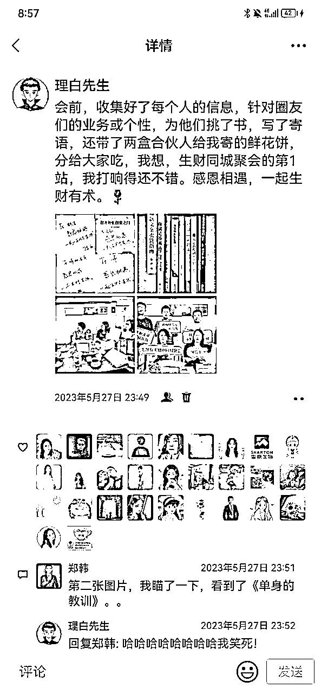

来源：https://fcjmogm9bc.feishu.cn/docx/UTARdI4HOommC1xuc5ic33IrnhJ
大家好，见帖欢喜，我是生财龙珠圈友理白，线上社牛、线下社恐，5月27日第一次参加生财福州同城聚会，通过订制礼物的方法，快速破冰，链接到一群有财富、有洞见、有智识的生财圈友，碰撞出多条新的业务思路，也拓展了未来合作的可能。
对于线下见面会，身边有不少小伙伴在第一次参加时都会遇到这样或那样的问题，比如想提前做准备，不知道该从哪里入手；想准备礼物，不知道送啥合适；准备不充分，线下秒变小透明。既没有成功链接圈友，又没有碰撞出新认知，还没有解决卡点问题，好几个月都陷入自我怀疑的社交低谷。
不少责任心爆棚的同城组局官，写了许多组局经验贴，今天，理白站在参会者的角度，与大家分享一下，生财新人参加同城聚会，该准备些什么。
从龙珠圈友见面会，到航海同城见面会，再到每年一度的拉新见面会，生财每年都会组织各种各样的线下见面会，帮助大家结交新伙伴，碰撞新认知。
在亦仁哥和小伙伴的策划下，今年的线下见面会已经覆盖了包括北京、上海、广州、深圳等 40 个城市。可以说，只要你愿意，就能够与圈友相遇，面对面探讨生财认知。
作为生财圈友的一员，尤其是生财小白，为什么一定要参加线下见面会呢？
一般参加线下见面会的圈友，可以分为哪些人群呢？根据我之前以及这次参加见面会的经验，可以分为三类：
这类圈友通常已经有了成熟的商业和产品体系，对于线下见面会的讨论主题也有了相对清晰的思路和认知。
他们来参加见面会，主要是为了扩大自身影响力，链接一些同势能的圈友，同时获取更多当前视野之外的信息，如某一个领域的风向标等等。
这类圈友的业务正处在上升期，商业版图还不够完善，也许正在面临某一领域的卡点问题。
他们来参加见面会，基本是带着具体的问题来的。通过见面会上与人沟通解决自己的问题，或者链接到比自己势能更强的人，寻求卡点问题的解决办法。
这一类圈友处于创业起步期，可能没有较为成体系的业务，或者根本就没有发展自己的业务。
他们来参加见面会，主要是来听取行业内大佬分享的，再通过其他人的业务思路、风向思路来寻找自身的项目，或是为自身未来的发展链接圈友。
其实，不论你处于哪一个时期，只要方法得当，都有可能在生财的线下圈友聚会上链接到想链接的人。
俗话说，“线上聊千遍，不如线下见一面”。
线下见面也是提升彼此信任感、加深彼此印象最好的方式。通过线下见面链接，后续跟圈友保持持续联系，也会对你的业务拓展、客户拓展有所帮助，甚至有可能遇到一起合作的伙伴。
生财线下圈友见面会是非常难得的开眼界的机会，它可以帮助我们提升认知、解决卡点、获取新的风向标。
每一次见面会之前，亦仁老师和举办负责人都会提前做活动流程规划，谨慎筛选见面会的核心主题。这些主题大多和当下的风向有直接联系，像前阵子北京的同城聚会，圈友们就围绕着“ChatGPT应用及探索”进行了探讨。
在见面会的过程中，除了常规的自我介绍破冰、自由讨论等环节，也会围绕核心主题，进行有针对性、有目的性的探讨，其中不乏业内大牛的真诚分享。而在与圈友的思维碰撞过程中，能够提升自身对该领域的认知和眼界。
已经在做产品的小伙伴应该深有体会，个人的正常曲线一般不是平缓增长的，而是每过一个阶段进入一个平台期，“平台期”就是我们所谓的卡点。
遇到卡点问题，有的人可能十天半个月，通过几次尝试就能突破，并快速进入到下一阶段；而有的人可能会被卡住一年半载，始终难以找到解决方案，一直处于停滞不前的状态，收入也进入了瓶颈期。
如何才能快速解决卡点问题呢？以我自身经验为例，遇到比自己高两个层级的人指点几句，基本可以快速理清思路，找到解决问题的办法，从而进入新的爆发期。
而生财线下圈友聚会恰恰提供了这样的平台，通过与比自己势能强、业务强的人链接，请教自身遇到的问题，很可能会有意想不到的收获。
生财“风向标”，往往比市场早半年，比起线上自己通过“风向标”板块寻找蓝海，线下聚会与圈友思维碰撞，更容易对风向标的内容有新思路和认知。之前就听一些老圈友聊起过，不要小瞧这些在圈友线下见面会“吹牛逼”的人，他们“吹”出来的内容，在一年后可能变成真红利。
说到提升“个人影响力”的话题，相信每一个做互联网创业的小伙伴都不陌生。
做互联网创业，无论是做自媒体、知识付费或是商业，任何一个领域不是说你花200块钱摆拍一张形象照片，就可以挂在头像上，自诩为“某某领域导师”、“某某行业大牛”。
而是通过你拿出的成绩，以及你释放的个人影响力让用户信服，不然大家凭什么为你付费呢？
在线上交往过程中，很多小伙伴可能“影响力”不足，不太会隔着屏幕推荐自己，尝试了很多办法都难以破圈，给他人留下的印象比较模糊。
线下见面除去个人介绍，还会有一些问题讨论、自由讨论的环节，再加上一些细微的小举动，都能够成为你“自我展示”的点，从而提升你在圈内的个人影响力。
个人影响力的提升，能够强化你的品牌势能，为后续的业务发展带来更多机会。
既然线下见面会很重要，作为生财新人，如何在首次见面前充分准备，实现超预期破圈呢？
为了在见面会上丝滑“破冰”，同时给大家留下较深的印象，我为每一位参与线下聚会的圈友准备了一份“礼物”——针对他们业务&个性的专属书籍，并在扉页手写了寄语。
这份礼物也许不贵重，但个性化的定制饱含了对圈友的心意，手写的寄语也能让大家在看书的时候想到我，想到同城聚会的场景。

为什么选择送礼物这种方式？其实，我一直坚信“人比钱更重要”。比起时不时挂在嘴边的惦念，一份精心挑选的小礼物，更能体现你的关心，够拉近人与人之间的距离。
不仅仅是结交新朋友，在与老朋友相处时我也很喜欢送礼物：
在工作的医院里，我会经常给值班实习生买饮料、买水果；在我的社群里，我会定期进行抽奖，还会根据特殊节日定制礼物内容。
这些举动都在一点一滴地增强我的影响力，帮助我在主业和副业走得更顺畅：
医院的实习生和我关系很好，处理我交代的任务更细心；社群的小伙伴粘性很高，每次拉新都会爆发出超强的“潜力”；我和合伙人们处得像家人一样，不仅可以陪伴前行，还能彼此给与情价。
言归正传，既然谈到通过“送礼物”丝滑破冰，如何才能准备一份送到人心坎里的礼物呢？结合一直以来的送礼经验以及这一次见面会，我对整个送书籍的流程进行一下复盘。
了解圈友的业务，能够让送出的礼物更贴心。同时，在挑选礼物的过程中，你会对礼物本身也会有一定了解，能够让你在线下见面送礼物时找到与对方聊天的话题，实现快速社交破冰。
不仅如此，了解圈友业务，对未来业务往来、深入链接也有着积极的作用。
我在新添加朋友后或日常朋友圈整理时，都会为每一位朋友添加&更新“备注”——微信名片的设置备注和标签中。备注的内容包括对方正在开展的业务、可能合作的方向等等。这个习惯让我即使有上千位好友，依然能够一一对应每一个人业务，在与大家沟通时有得聊、想要合作时快速找到合适的人。
如何才能快速了解圈友业务呢？
具体实操如下：
1、一般在线下见面之前，组织者都会统一拉群并组织自我介绍。在这一环节里，我们通常会加很多新圈友，添加的过程中就可以根据自我介绍内容，给对方添加相应的业务标签。
2、我一直坚信“主动就会有故事”，所以在加好友之后，也会主动与对方打招呼并送上见面礼。同时，根据对方的回应，进行相对深入一些的聊天，其中就包括对我自身业务的介绍，以及对对方业务的了解。在这一过程中，也是我们深入了解对方业务的机会，帮助我们定位什么礼物更合适TA。
如何选择合适的礼物呢？
以我自身为例，在给合伙人送礼时，我可能会选择旅游途中的特产，符合合伙人性格的小物件等。这是因为，与合伙人的相处时间更久，对他们有更深入的了解，不太会送出错。
而对于刚刚链接的新朋友，我则大多会选择适合对方的书籍，原因如下：
如果选择送一些生活好物，也许对方已经有了或者用不到；如果选择食物，对方也可能不喜欢吃；相较于其他礼物，送给在创业过程中的小伙伴书籍，则是十分稳妥且不太会出错的礼物。
做互联网创业想要持续输出，离不开大量书籍的理论输入。比起其他礼物，送书籍则有送“知识”和“认知”的意义，很适合作为圈友间互赠的礼物。
不仅如此，书籍的种类和内容丰富，不论对方是做什么领域的，你都能够找到适合对方的那一本书。如图，是我在线下见面会上为每一位小伙伴挑选的书籍：
第一次见面送礼物，送什么价位的更合理呢？送礼物本身不在乎价格，而是一份心意。
不过，送礼物确实很容易出现价格上的问题：选择价值略高的礼物，对于第一次见面难免让对方不太容易接受；而送价值略低的礼物，确实也有一些“拿不出手”。再加上要在线下见面会上送给很多人，想要将礼物价值保持相近，本身就是件很困难的事情。
书籍因为其“意义”远大于价格本身，则不太会出现上述问题。
具体实操如下：
1、根据圈友业务，在豆瓣、知乎、小红书等平台做功课，筛选出口碑不错、质量佳的书籍。当然，如果这本书自己本身就看过，那就更合适了。
2、购买书籍后邮寄给自己，再在书籍扉页写上赠言后送出。
Tips：即使是已经链接了多次，并且有对方地址的圈友，也建议大家将书籍邮寄给自己再增加赠言送出。我日常送礼物都会采用这种方式（不仅仅是书），在我看来，一张亲笔写下赠言的小卡片，更能传递我对对方的用心。
完成上述两步，基本上完成了见面前的准备。
在线下见面之前，建议大家对自己买的书籍进行进一步的了解，包括书籍的核心内容、书籍的口碑、推荐的点等等。这样我们在线下和圈友见面送礼物时，就能够“以书会有”，快速进行社交破冰，给对方留下较深刻的印象。
比如，对方是做文案写作业务的，送她一本《爆款文案卖货指南》书籍，可以在见面时聊：“看到你做这方面的业务，发现这本书很不错，很适合你。我曾经也读过，里面XX很有感触........”再以书籍为媒介，顺理成章地聊到对方的业务、介绍自己的业务等。
作为线下见面会的“新人”，这一次“送书”让我不仅链接了高质量的圈友，也提升了个人的影响力。
能取得这样的成绩，真的很知足。
想跟大家聊的是，千万不要带着太强的功利心去“做准备”。在任何一个圈子里，想要长久且可持续的提升个人影响力，收获大家对你的认可，都离不开以下3点心态：
生财的核心理念之一就是“利他”。简单来说，就是用你自身的价值、你能够输出的内容，不计较回报的帮助到他人，才能进一步产生联系、互动。
我从做自媒体创业以来，始终谨记着“利他”的原则去与人相处，比如每次添加小伙伴都会主动的发送见面礼，日常看到有价值的内容会“顺手”转给需要它的合伙人，每天至少5条高质量的朋友圈输出。真诚利他的交付和陪伴，能够让大家看见你的用心，而他们的信任最终会成就你的势能。
我一直和我的合伙人说，“势能相近的人聊天是交流，势能相差悬殊的人聊天是请教”。
在与对方沟通时要摆正姿态，想从对方身上有所获取之前，先想一想能够为对方带来什么：
与势能相近的小伙伴探讨问题，可以通过思想碰撞彼此交换认知，你在获得价值的同时也为对方带去了价值；与势能相差较多的大佬探讨时，其实是你在单方面的请教，那如果没有业务上的“价值交换”，可以给对方发一个小红包表示感谢。
有来有往的价值交换，能够建立平等的关系，让彼此之间的链接更长久。
我曾用几句话就成交了3位数的产品，也曾用30min语音电话成交5位数的产品。如果说这么高的转化率有什么秘诀，我觉得除了专业，更多的是真诚和信任。你可以有目的的拉新，可以有目的的发售，也可以有目的的使用话术。但在与圈友和用户交往时，“真诚”两个字一定是摆在头等位置的大前提。
虚情假意的阿谀奉承和真诚的交流沟通，不需要太费力气就能轻易分辨出。以“真诚”为原则，能够在日复一日的相处中积累口碑和信任感，信任则是建立和强化个人IP必不缺少的一环。
所以啊，如果你平时事事带着“目的性”，没有价值交换全靠套路，即使销售做的再好，也难得人心。
最后，我想对大家说的是：以真诚、利他去链接，远比“套路”更得人心。
祝我们生财有术，破冰链接，亦有术。